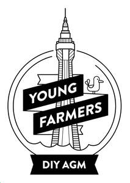

Trade Mark Journal No.2025/029 18 July 2025
UK00004230083 7 July 2025 (35,41,43)

- Class 35
- Event marketing; Promotion of sports competitions and events; Promotion of special events; Promotion of musical concerts; Promotion [advertising] of concerts; Arranging promotion of charitable fundraising events; Organization of events, exhibitions, fairs and shows for commercial, promotional and advertising purposes; Business management of entertainment venues; Business promotion; Advertising services for the promotion of beverages; Publicity and sales promotion services; Publicity and sales promotion; Promotion [advertising] of business.
- Class 41
- Music festival services; Nightclub services [entertainment]; Club [cabaret] services; Night club services [entertainment]; Nightclub services; Club [discotheque] services; Booking of performing artists for events (services of a promoter); Ticketing and event booking services; Dance events; Organisation of entertainment events; Arranging for ticket reservations for shows and other entertainment events; Booking of seats for entertainment events; Ticket reservation and booking services for entertainment events; Dance club services; Ticket procurement services for entertainment events; Organisation of entertainment and cultural events; Entertainment club services; Club entertainment services; Club services [entertainment]; Organization of entertainment events; Entertainment services by stage production and cabaret; Organising of entertainment competitions; Organising of competitions for entertainment; Competitions (Organising of entertainment -); Organising dancing events; Presentation of live entertainment events; Production of live entertainment events; Conducting of entertainment events; Cabaret entertainment services; Organization of dancing events; Special event planning; Ticket reservation and booking services for music concerts; Organisation of entertainment competitions; Night-club services; Festivals (Organisation of -) for entertainment purposes; Ticket information services for entertainment events; Artistic management of entertainment venues.
- Class 43
- Bar and restaurant services; Restaurant and bar services; Beer bar services; Wine bar services; Bar services; Night club services [provision of food]; Snack bar services; Food and drink catering for cocktail parties; Club services for the provision of food and drink.
Epic Bars and Clubs Ltd